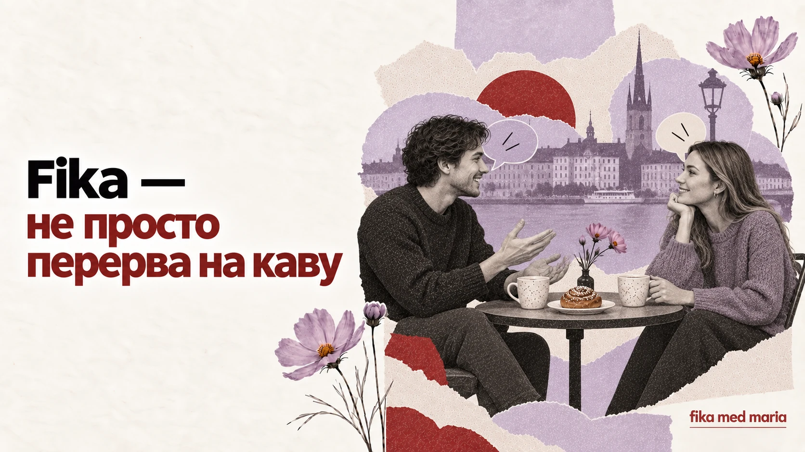

Fika — не перерва на каву: як один ритуал пояснює шведські стосунки

Якщо перекласти fika як «перерва на каву», зміст наче зрозумілий. Але зникає головне: кава — лише привід, а сама fika організовує близькість.
Це короткий простір, у якому люди перестають бути лише колегами, сусідами або учасниками зустрічі. Вони сідають разом, говорять про буденне й створюють зв'язок без великої події.
Fika — іменник, дієслово і пропозиція
Шведською можна сказати:
Ska vi ta en fika?
Може, вип'ємо кави / зустрінемося на fika?
Vi fikade efter jobbet.
Ми були на fika після роботи.
Det är dags för fika.
Час на fika.
Напій не обов'язково має бути кавою. Можна пити чай або щось холодне. Важливіше зробити паузу й розділити її з іншими.
Робоча fika — не зовсім вільний час
У деяких колективах fika відбувається регулярно й стає частиною робочого ритму. Формально це перерва, але саме там нова людина може почути те, чого немає в документах:
- хто чим займається;
- як колеги жартують;
- які теми всіх хвилюють;
- що означають внутрішні скорочення;
- як у команді прийнято спілкуватися.
Постійно пропускаючи fika, можна мимоволі залишитися поза неформальним життям колективу. Це не означає, що потрібно завжди бути присутньою. Але іноді двадцять хвилин за спільним столом допомагають інтегруватися більше, ніж ще один робочий лист.
Про що говорять
Безпечні теми залежать від групи, але часто це:
- вихідні;
- погода;
- їжа;
- серіали;
- подорожі;
- домашні справи;
- плани на свята;
- невеликі події дня.
Почати можна просто:
Har du några planer för helgen?
Маєш плани на вихідні?
Har du sett den nya serien?
Ти дивилася новий серіал?
Vad gott det ser ut! Har du bakat själv?
Як смачно виглядає! Ти сама пекла?
Хто платить
Якщо друзі зустрічаються в кафе, кожен часто може оплачувати своє замовлення. Не варто автоматично сприймати це як холодність або скупість: окрема оплата зменшує відчуття боргу й робить зустріч простішою.
Якщо вас запросили додому, доречно запитати:
Ska jag ta med något?
Мені щось принести?
Навіть якщо господар відповість Nej, det behövs inte, запитання показує увагу.
Tack för fikat
Після зустрічі можна сказати:
Tack för fikat!
Дякую за fika / за частування і час разом.
Якщо зустріч була вчора або кілька днів тому:
Tack för senast!
Дякую за минулу зустріч.
Ця фраза не вимагає довгої промови. Вона просто підтверджує: мені було приємно, я пам'ятаю наш час разом.
Чому саме Fika med Maria
Назва Fika med Maria не обіцяє сухої передачі правил. Вона запрошує сісти поруч, поставити «дурне» запитання, помилитися, посміятися й поступово зробити шведську частиною свого життя.
Урок може дати знання. Fika створює простір, у якому хочеться говорити.
Запросіть людину не абстрактно, а конкретно:
Vill du ta en fika på torsdag efter jobbet?
А якщо не впевнені щодо часу:
Jag tar gärna en fika någon dag. När passar det dig?
У Speak Café ми зустрічаємося не для бездоганних відповідей, а для живої розмови, нових слів і звички говорити. Speak Café.
Чи fika обов'язково включає солодке?
Ні. Випічка поширена, але суть не в конкретній їжі.
Чи можна запросити на fika людину, яку мало знаєш?
Так. Це легший і менш формальний формат, ніж повна вечеря вдома.